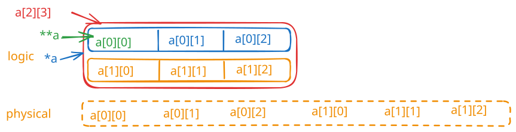

struct book {
char title[MAXTITL];
char author[MAXAUTL];
float value;
};
struct book library, *p_lib;
struct book {
char title[MAXTITL];
char author[MAXAUTL];
float value;
} library, *p_lib;
struct book library[MAXBOOKS];
struct book {
char title[MAXTITL];
char author[MAXAUTL];
float value;
struct book[MAXRELATE] res;
} library[MAXBOOKS];
typedef struct BiTNode
{
int data;
struct BiTNode *lchild;
struct BiTNode *rchild;
//struct BiTNode *parent; // 变成了 三叉链表
}BiTNode,*BiTree;
struct book library =
{
"The Pious Pirate and te Devious Damsel",
"Rennee Vivotte",
1.95
};
struct book gift =
{
.value = 25.99;
.author = "Me";
.title = "You";
}
scanf("%f", &library.value);
s_gets(library.author, MAXAUTL);
scanf("%f", &p_lib->value);
s_gets(p_lib->author, MAXAUTL);
struct + malloc
#include <stdio.h>
#define LEN 20
struct names {
char first[LEN];
char last[LEN];
};
int main() {
struct names veep = {"Talia", "Summers"};
struct pnames treas = {"Brad", "Fallingjaw"};
printf("%s and %s\n", veep.first, treas.first);
struct names accountant;
struct names attorney;
printf("Enter the last name of your accountant: ");
scanf("%s", accountant.last);
printf("Enter the last name of your attorney: ");
scanf("%s", attorney.last); /* 这里有一个潜在的危险 */
return 0;
}
// names3.c -- use pointers and malloc()
#include <stdio.h>
#include <string.h> // for strcpy(), strlen()
#include <stdlib.h> // for malloc(), free()
#define SLEN 81
struct namect {
char * fname; // using pointers
char * lname;
int letters;
};
void getinfo(struct namect *); // allocates memory
void makeinfo(struct namect *);
void showinfo(const struct namect *);
void cleanup(struct namect *); // free memory when done
char * s_gets(char * st, int n);
int main(void)
{
struct namect person;
getinfo(&person);
makeinfo(&person);
showinfo(&person);
cleanup(&person);
return 0;
}
void getinfo (struct namect * pst)
{
char temp[SLEN];
printf("Please enter your first name.\n");
s_gets(temp, SLEN);
// allocate memory to hold name
pst->fname = (char *) malloc(strlen(temp) + 1);
// copy name to allocated memory
strcpy(pst->fname, temp);
printf("Please enter your last name.\n");
s_gets(temp, SLEN);
pst->lname = (char *) malloc(strlen(temp) + 1);
strcpy(pst->lname, temp);
}
void makeinfo (struct namect * pst)
{
pst->letters = strlen(pst->fname) +
strlen(pst->lname);
}
void showinfo (const struct namect * pst)
{
printf("%s %s, your name contains %d letters.\n",
pst->fname, pst->lname, pst->letters);
}
void cleanup(struct namect * pst)
{
free(pst->fname);
free(pst->lname);
}
char * s_gets(char * st, int n)
{
char * ret_val;
char * find;
ret_val = fgets(st, n, stdin);
if (ret_val)
{
find = strchr(st, '\n'); // look for newline
if (find) // if the address is not NULL,
*find = '\0'; // place a null character there
else
while (getchar() != '\n')
continue; // dispose of rest of line
}
return ret_val;
}
struct 复合字面量（C99）
/* complit.c -- compound literals */
#include <stdio.h>
#define MAXTITL 41
#define MAXAUTL 31
struct book { // structure template: tag is book
char title[MAXTITL];
char author[MAXAUTL];
float value;
};
int main(void)
{
struct book readfirst;
int score;
printf("Enter test score: ");
scanf("%d",&score);
if(score >= 84)
readfirst = (struct book) {"Crime and Punishment",
"Fyodor Dostoyevsky",
11.25};
else
readfirst = (struct book) {"Mr. Bouncy's Nice Hat",
"Fred Winsome",
5.99};
printf("Your assigned reading:\n");
printf("%s by %s: $%.2f\n",readfirst.title,
readfirst.author, readfirst.value);
return 0;
}
伸缩型成员变量（C99）：结构体里边的数组不写 MAX，只写 方括号，这样后边的 malloc 就要去计算大小了
// flexmemb.c -- flexible array member (C99 feature)
#include <stdio.h>
#include <stdlib.h>
struct flex
{
size_t count;
double average;
double scores[]; // flexible array member
};
void showFlex(const struct flex * p);
int main(void)
{
struct flex * pf1, *pf2;
int n = 5;
int i;
int tot = 0;
// allocate space for structure plus array
pf1 = malloc(sizeof(struct flex) + n * sizeof(double));
pf1->count = n;
for (i = 0; i < n; i++)
{
pf1->scores[i] = 20.0 - i;
tot += pf1->scores[i];
}
pf1->average = tot / n;
showFlex(pf1);
n = 9;
tot = 0;
pf2 = malloc(sizeof(struct flex) + n * sizeof(double));
pf2->count = n;
for (i = 0; i < n; i++)
{
pf2->scores[i] = 20.0 - i/2.0;
tot += pf2->scores[i];
}
pf2->average = tot / n;
showFlex(pf2);
free(pf1);
free(pf2);
return 0;
}
void showFlex(const struct flex * p)
{
int i;
printf("Scores : ");
for (i = 0; i < p->count; i++)
printf("%g ", p->scores[i]);
printf("\nAverage: %g\n", p->average);
}
struct person
{
int id;
struct {char first[20]; char last[20];}; // 匿名结构
};
// 初始化
struct person ted = {8483, {"ted", "grass"}};
#define MAXTITL 40
#define MAXAUTL 40
struct book {
char title[MAXTITL];
char author[ MAXAUTL ];
float value;
};
fprintf(pbooks, "%s. %s. %.2f\n", primer.title, primer.author, primer.value);
fprintf(pbooks, "%39s%39s%8.2f\n", primer.title, primer.author, primer.value);
fwrite(&primer, sizeof(struct book),l,pbooks);
只能存一个变量的数组，推荐使用方式：结构+联合
struct owner {
char sosecurity[12];
...
};
struct leasecompany {
char name[40];
char headquarters[40];
...
};
union data {
struct owner owncar;
struct leasecompany leasecar;
};
struct car_data {
char make[15];
int status; /* 私有为0，租赁为1 */
union data ownerinfo;
...
};
枚举，默认值是从 0 开始的 int，也可以自定义数值
enum week = {Mon, Tus, Wen, Thr, Fri, Sat, Sun};
enum levels = {lows = 100, medium = 500, high = 2000};
Demo
/* enum.c -- uses enumerated values */
#include <stdio.h>
#include <string.h> // for strcmp(), strchr()
#include <stdbool.h> // C99 feature
char * s_gets(char * st, int n);
enum spectrum {red, orange, yellow, green, blue, violet};
const char * colors[] = {"red", "orange", "yellow",
"green", "blue", "violet"};
#define LEN 30
int main(void)
{
char choice[LEN];
enum spectrum color;
bool color_is_found = false;
puts("Enter a color (empty line to quit):");
while (s_gets(choice, LEN) != NULL && choice[0] != '\0')
{
for (color = red; color <= violet; color++)
{
if (strcmp(choice, colors[color]) == 0)
{
color_is_found = true;
break;
}
}
if (color_is_found)
switch(color)
{
case red : puts("Roses are red.");
break;
case orange : puts("Poppies are orange.");
break;
case yellow : puts("Sunflowers are yellow.");
break;
case green : puts("Grass is green.");
break;
case blue : puts("Bluebells are blue.");
break;
case violet : puts("Violets are violet.");
break;
}
else
printf("I don't know about the color %s.\n", choice);
color_is_found = false;
puts("Next color, please (empty line to quit):");
}
puts("Goodbye!");
return 0;
}
char * s_gets(char * st, int n)
{
char * ret_val;
char * find;
ret_val = fgets(st, n, stdin);
if (ret_val)
{
find = strchr(st, '\n'); // look for newline
if (find) // if the address is not NULL,
*find = '\0'; // place a null character there
else
while (getchar() != '\n')
continue; // dispose of rest of line
}
return ret_val;
}
typedef 是编译器解释的，#define 是预处理器解释的。
typedef+结构(上边结构里边)
int a[2][3];

int *p[10]; // 含有十个指针的数组
int (*p)[10]; // 指向含有十个整数的数组的指针
// 含有4 个指针的数组
int *p[4];
p[0] = &a[0][0];
p[1] = &a[0][1];
p[2] = &a[1][0];
p[3] = &a[1][1];
printf("%p %p %p %p\n", p[0], p[1], p[2], p[3]);
printf("%d %d %d %d\n", *p[0], *p[1], *p[2], *p[3]);
// 0x7ff7ba96b810 0x7ff7ba96b814 0x7ff7ba96b81c 0x7ff7ba96b820
// 11 12 21 22
// 指向数组的指针
int num[4] = {100, 200, 300, 400};
int(*q)[4] = num;
printf("%p, sizeof(int)=%u,sizeof(q)=%u, sizeof(*q)=%u\n", q, sizeof(int), sizeof(q), sizeof(*q));
printf("%d %d %d %d\n", (*q)[0], (*q)[1], (*q)[2], (*q)[3]);
// 0x7ff7be28a7e0, sizeof(int)=4,sizeof(q)=8, sizeof(*q)=16
// 100 200 300 400